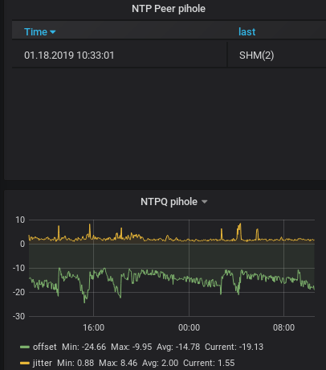

Updates
Nachdem ich erfolgreich meine eigene Atomuhr in Betrieb genommen habe, muss sie sich bereits einer (von mir) ungeahnten Herausforderung stellen...
Ein geschätzter Kollege von mir wies mich neulich auf diesen Artikel hin, der darüber berichtet, dass GPS nur einen 10 Bit breiten Zähler für den Zahler der aktellen Woche verwendet und daher öfter mal einen Überschlag hat und wieder bei 0 anfängt.
Das wird in der Nacht vom 6. auf den 7. April (UTC) das nächste Mal der Fall sein.
Da GPS daraus das aktuelle Datum berechnet kann das im schlimmsten Fall dazu führen, dass das Datum, das der jeweilige Empfänger liefert wieder um 1024 Wochen (oder rund 20 Jahre) zurückspringt. Für mich und meinen NTP-Server wäre das ziemlich schlecht - daher habe ich mal weitere Recherchen angestrengt.
Diese Recherchen sagten mir, dass man sich eigentlich keine Sorgen zu machen braucht, wenn der fragliche Empfänger - bzw. seine Firmware - jünger ist als 10 bis 15 Jahre. Nun habe ich die alte Rechnung für mein erstes EM-406A-GPS-Modul rausgekramt. Sie stammt von 2009. Damit habe ich jetzt wieder mal was, auf das ich aufgeregt und mit Spannung warten kann (Ich wei0, andere Leute haben ein Leben und können über solche Dinge nicht mal milde lächeln).
Sollte das Problem meine beiden EM-406A treffen, kann ich auch den mit viel Liebe reaktivierten GPS-Logger / Fahrtenschreiber wieder aus meinem Auto ausbauen.
Na mal sehen: ich werden am 6. April abends ein Script starten, das alle drei Minuten die Uhrzeit in eine Textdatei schreibt und gleichzeitig die Daten des GPS-Empfängers in eine weitere Textdatei protokollieren und am 7. April auswerten - noch hoffe ich, dass ich Glück habe und beide Empfänger auch danach die korrekte Uhrzeit liefern und damit weiterhin funktionieren, damit ich auch später noch Auswertungen wie diese hier in meiner Grafana-Installation bewundern kann:

Jitter und Offset meines NTP-Servers in Grafana
Aktualisierung vom 21. April 2019
Artikel, die hierher verlinken
Raspi als VPN-Endpunkt
15.06.2019
Es war wieder einmal an der Zeit, meinen Raspi um neue Funktionalität zu erweitern...
Tags


Neueste Artikel
-
 Daten inline in Gnuplot-Scripts
Daten inline in Gnuplot-Scripts
Ich nutze gerne und oft Gnuplot zur Erstellung von Graphiken. Neulich hatte ich eine Idee, die nach etwas Recherche im Internet nicht mehr ganz so neu erschien...
Weiterlesen... -
SSH und MFA
Ein kleiner Auffrischer zum Wochenende
Weiterlesen... -
Warten auf Jupiter Hell...
Ich warte nun schon sehr lange auf den Nachfolger - aber der Vorgänger macht immer noch Spaß!
Weiterlesen...
Manche nennen es Blog, manche Web-Seite - ich schreibe hier hin und wieder über meine Erlebnisse, Rückschläge und Erleuchtungen bei meinen Hobbies.
Wer daran teilhaben und eventuell sogar davon profitieren möchte, muß damit leben, daß ich hin und wieder kleine Ausflüge in Bereiche mache, die nichts mit IT, Administration oder Softwareentwicklung zu tun haben.
Ich wünsche allen Lesern viel Spaß und hin und wieder einen kleinen AHA!-Effekt...
PS: Meine öffentlichen GitHub-Repositories findet man hier.